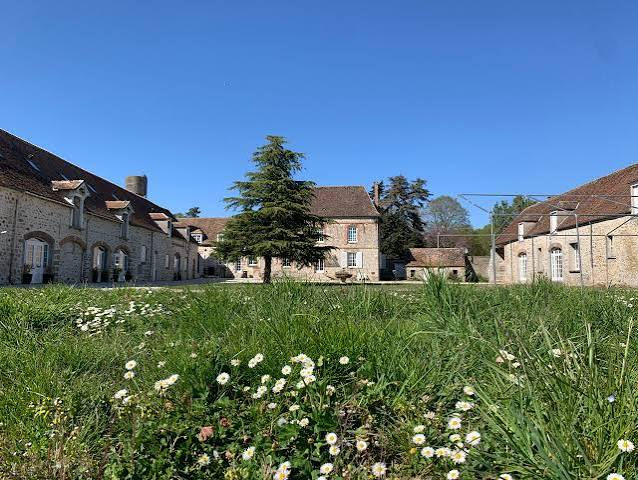
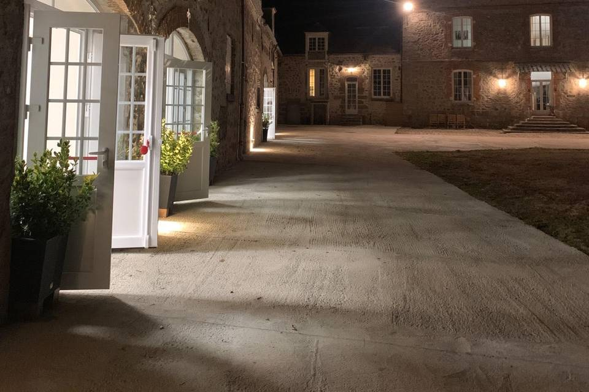
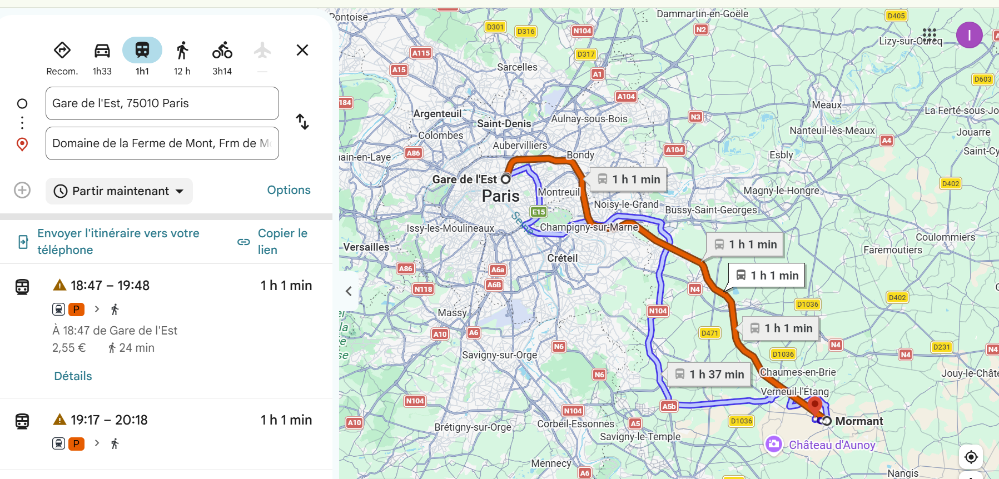
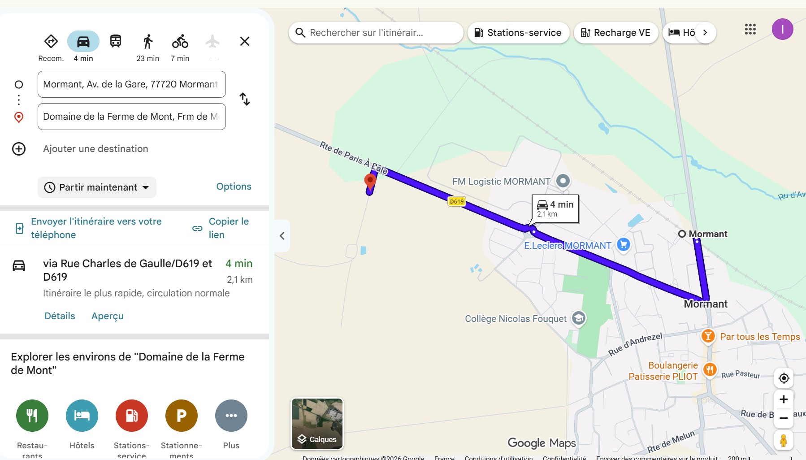

IANJA & ELIZA · 29 MAI 2027
Infos pratiques
Pour préparer votre venue et profiter de cette journée avec nous.
Le lieu et le déroulement de la journée
Samedi 29 mai 2027
Domaine de la Ferme de Mont
Ferme de Mont77720 Mormant · France
Nous avons la joie de vous retrouver au Domaine de la Ferme de Mont pour célébrer notre mariage. La cérémonie, le vin d’honneur et la réception auront lieu au même endroit : vous pourrez profiter de cette journée avec nous sans changer de lieu.
Ouvrir l’itinéraire
Le programme
Les horaires et le déroulement de la journée seront précisés ici prochainement.
Nous vous rappelons que la présence à la cérémonie est obligatoire pour participer à notre mariage.

Venir, stationner et se loger
Venir en train
La gare de Mormant est desservie par le Transilien ligne P, direction Provins, au départ de Paris Gare de l’Est.
Pensez à consulter les horaires et les éventuelles perturbations à l’approche du mariage.
De la gare au domaine : prévoyez d’être véhiculés
À titre indicatif, le domaine se trouve à environ 1,7 km de la gare, soit une vingtaine de minutes à pied. Le trajet se situe en campagne et ne dispose pas de trottoirs sur une grande partie du parcours.
Pour votre confort et votre sécurité, nous vous encourageons donc à prévoir un transport en voiture au minimum entre la gare et le domaine, à l’aller comme au retour.
Voir les cartes des trajets


Ces captures sont fournies à titre indicatif : les durées, les tarifs et les horaires affichés ne correspondent pas nécessairement au jour du mariage. Touchez une image pour l’agrandir.
Covoiturage
Un groupe WhatsApp consacré au covoiturage sera créé prochainement dans notre communauté pour vous permettre de proposer ou de rechercher un trajet, à l’aller comme au retour.
Stationnement
Un parking sera disponible à l’intérieur du domaine.
Hébergement
Si vous souhaitez séjourner à proximité, vous pourrez rechercher un hébergement dans les environs du domaine, notamment parmi les locations proposées sur Airbnb. Nous vous conseillons d’anticiper votre réservation selon vos besoins.
Nous vous remercions de prévoir votre hébergement et vos déplacements : leur réservation, leur organisation et les frais associés resteront à votre charge.
Quelle tenue prévoir ?
Nous serons heureux de vous retrouver dans une tenue de fête qui vous ressemble, qu’il s’agisse d’un costume, d’une robe, d’un ensemble habillé ou d’une tenue traditionnelle. Aucun code couleur n’est imposé ; nous demandons simplement aux hommes d’éviter le costume blanc. Nous aimerions aussi vous inviter à privilégier une tenue élégante et pudique, en évitant les vêtements trop courts, très décolletés ou transparents, afin d’honorer ensemble le caractère solennel de cette journée. Merci de votre délicatesse et de l’attention que vous porterez à ces souhaits.
Votre place et vos questions
Le plan de table
Les noms des tables et des invités seront dévoilés le jour du mariage, le 29 mai 2027, directement sur ce site. Conservez le lien ou le QR code : vous pourrez y rechercher votre nom pour retrouver votre place.
Découvrir la page du plan de tableUne question ?
Les coordonnées des personnes à contacter avant le mariage et le jour J seront précisées ici prochainement.
Consulter les questions fréquentes